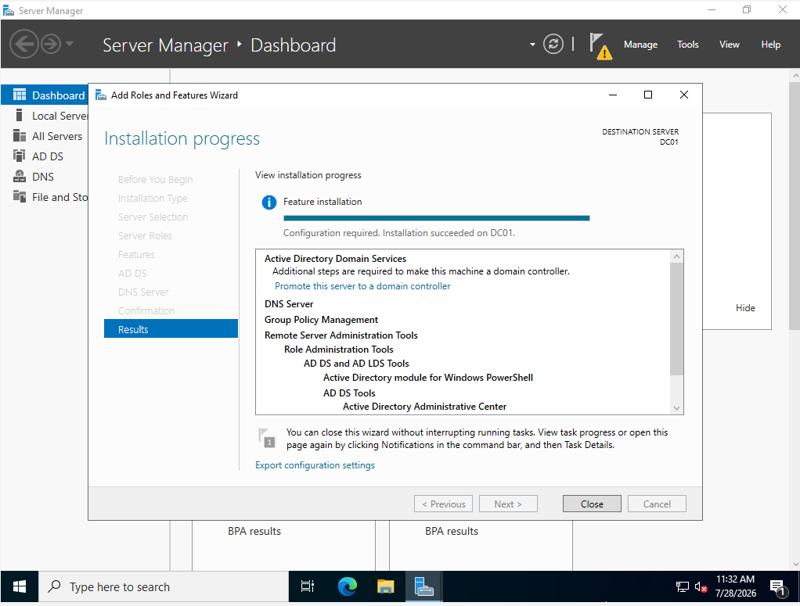
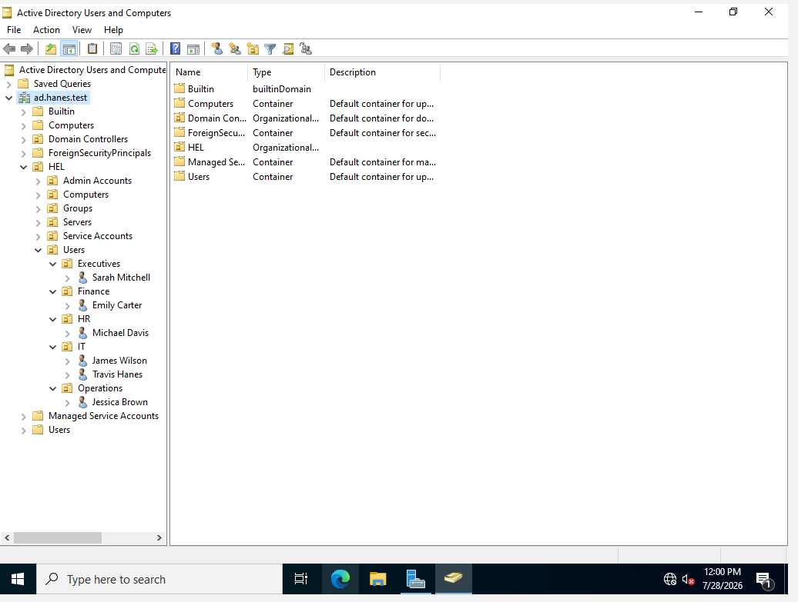
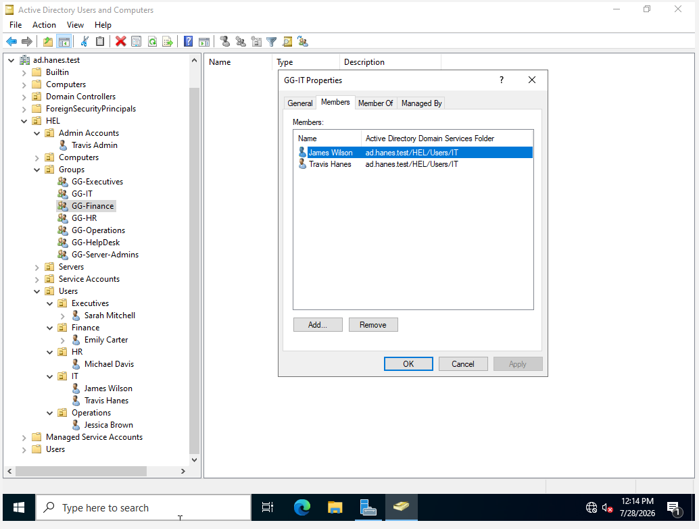
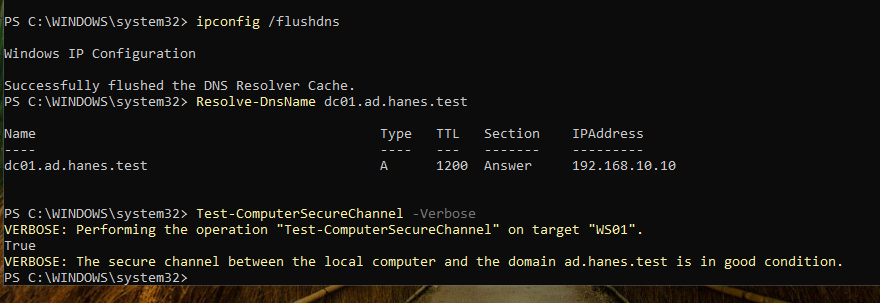
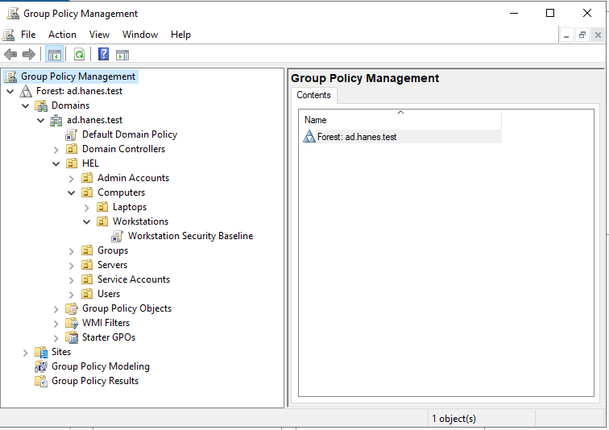
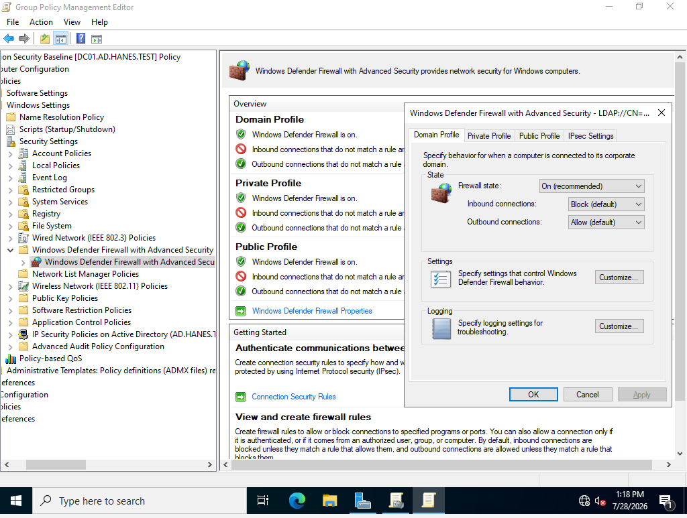
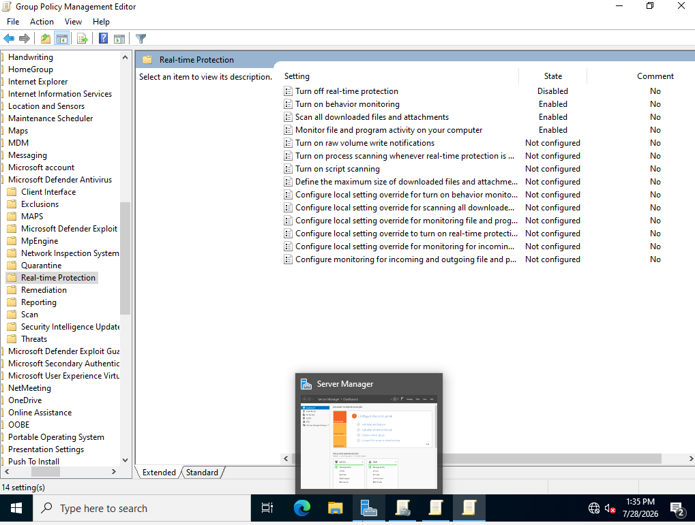
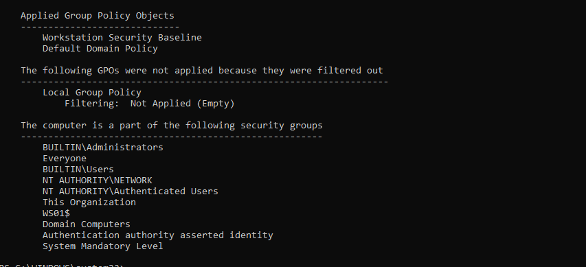
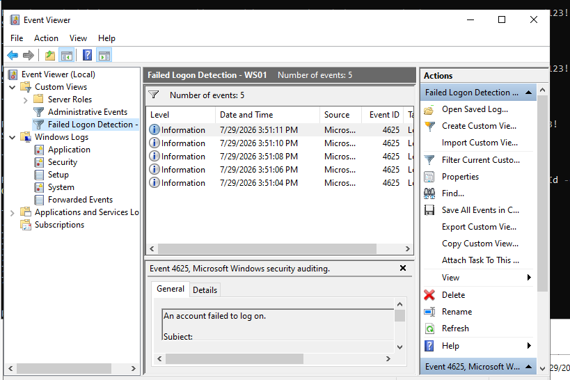

IDENTITY & ACCESS MANAGEMENT • WINDOWS SECURITY
Windows Active Directory
Security Lab
A hands-on Windows enterprise lab designed to develop practical experience with Active Directory, identity management, authentication, networking, security policy, and Windows event monitoring.
01 — OVERVIEW
Project Overview
I built a virtualized Windows enterprise environment consisting of a Windows Server system and Windows 11 client to gain hands-on experience with centralized identity and security administration.
The lab was designed to simulate core components of a small enterprise Windows environment while providing a controlled platform for practicing Active Directory, authentication, networking, policy configuration, and security monitoring.
02 — ENVIRONMENT
Lab Architecture
DOMAIN CONTROLLER
Windows Server
Windows Server system configured to provide centralized identity, authentication, DNS, and Active Directory Domain Services for the lab environment.
DOMAIN CLIENT
Windows 11
Windows 11 workstation used to test domain membership, user authentication, security policies, and interaction with centralized Active Directory services.
VIRTUALIZATION
VirtualBox
Virtualization platform used to create and manage the Windows Server and Windows 11 systems within an isolated lab environment.
03 — METHODOLOGY
Deployment Process
Virtual Machine Deployment
Deployed Windows Server and Windows 11 virtual machines in VirtualBox to create the foundation of the enterprise lab environment.
Network Configuration
Configured virtual network adapters and IP addressing to establish communication between the Windows Server and Windows 11 systems.
Active Directory Deployment
Installed Active Directory Domain Services and promoted the Windows Server system to a domain controller.
DNS & Domain Configuration
Configured DNS and domain services to support centralized name resolution and Active Directory authentication.
Windows 11 Domain Join
Connected the Windows 11 workstation to the domain and validated communication with the domain controller.
Identity & Policy Configuration
Created and managed Active Directory identities and configured Windows security policies within the domain.
Security Monitoring
Generated and reviewed Windows security events to observe authentication activity and validate security logging within the environment.
04 — EVIDENCE
Technical Walkthrough
STEP 01
Domain Controller Deployment
I began by deploying Windows Server 2022 in VirtualBox and installing the core services required for the domain environment.
Active Directory Domain Services, DNS Server, Group Policy Management, and the supporting administrative tools were installed on the server before it was promoted to the primary domain controller.
The completed deployment established DC01 as the domain controller for the ad.hanes.test Active Directory domain.
Core Services
Windows Server 2022
Active Directory Domain Services
DNS Server
Group Policy Management
Domain: ad.hanes.test
Domain Controller: DC01

STEP 02
Active Directory Organizational Structure
After establishing the domain controller, I designed an organizational structure for the lab using Organizational Units (OUs) to separate users, computers, administrative accounts, security groups, servers, and service accounts.
Department-specific OUs were created for Executives, Finance, Human Resources, IT, and Operations. Computer objects were also separated into Workstations and Laptops to support targeted administration and Group Policy deployment.
This structure provides a scalable foundation for applying role-based permissions, security groups, Group Policy Objects, and administrative controls throughout the domain.
Domain Structure
ad.hanes.test
└── HEL
├── Admin Accounts
├── Computers
│ ├── Laptops
│ └── Workstations
├── Groups
├── Servers
├── Service Accounts
└── Users
├── Executives
├── Finance
├── HR
├── IT
└── Operations

STEP 03
Users, Security Groups & Role-Based Access
After organizing the directory structure, I created departmental security groups to support centralized access management across the domain.
Groups were created for Executives, IT, Finance, Human Resources, Operations, Help Desk, and Server Administrators. This allows permissions to be assigned to groups rather than directly to individual users.
I then validated group membership by assigning the IT user accounts to the GG-IT security group, demonstrating a role-based approach to identity and access management.
Security Groups
GG-Executives
GG-IT
GG-Finance
GG-HR
GG-Operations
GG-HelpDesk
GG-ServerAdmins

STEP 04
Windows 11 Domain Integration
With the Active Directory structure in place, I integrated a Windows 11 workstation named WS01 into the ad.hanes.test domain.
Before joining the workstation, I validated connectivity to the domain controller and confirmed that DNS requests were resolving through DC01. Proper DNS configuration was critical because Active Directory relies on DNS to locate domain services.
After joining WS01 to the domain, I moved the computer object into the Workstations OU and verified communication with the domain controller. I then validated the workstation's secure channel with the domain to confirm that the trust relationship was functioning correctly.
Domain Integration
Domain: ad.hanes.test
Domain Controller: DC01
DC01: 192.168.10.10
Workstation: WS01
WS01: 192.168.10.20
Computer OU: HEL/Computers/Workstations
Logon Server: \\DC01
Secure Channel: True


STEP 05
Group Policy & Endpoint Security Hardening
After integrating WS01 into the domain, I created a centralized Workstation Security Baseline using Group Policy to apply security controls to domain-joined endpoints.
The GPO was linked to the Workstations OU, allowing security settings to be managed centrally rather than configured manually on individual systems.
The baseline included Windows Defender Firewall configuration and Microsoft Defender Antivirus protections. Firewall profiles were enabled with unsolicited inbound connections blocked, while Defender real-time protection was centrally enforced through Group Policy.
I then validated the configuration directly from WS01 to confirm that the Workstation Security Baseline was successfully applied to the endpoint.
Security Baseline
Workstation Security Baseline
├── Windows Defender Firewall
│ ├── Domain Profile: Enabled
│ ├── Private Profile: Enabled
│ ├── Inbound: Block
│ └── Outbound: Allow
│
└── Microsoft Defender Antivirus
└── Real-Time Protection: Enabled
Target OU: HEL/Computers/Workstations
Endpoint: WS01



STEP 06
Advanced Audit Policy & Security Monitoring
After establishing the workstation security baseline, I expanded visibility across the domain by configuring Advanced Audit Policy settings through Group Policy. The goal was to generate security-relevant Windows events that could be used for monitoring, investigation, and detection.
Auditing was configured across several key categories, including Account Logon, Account Management, Detailed Tracking, and Logon/Logoff. These categories provide visibility into authentication activity, account changes, process execution, and user session activity.
This configuration established the telemetry foundation needed for centralized security monitoring. Rather than relying only on preventative controls, the environment could now generate detailed security events that could be collected and analyzed for suspicious activity.
These audit policies were later used with Windows Event Forwarding to centralize endpoint security events on DC01 and support detection of activity such as failed authentication attempts and process creation.
Audit Policy Configuration
Advanced Audit Policy
│
├── Account Logon
│ └── Authentication Activity
│
├── Account Management
│ └── User & Group Changes
│
├── Detailed Tracking
│ └── Process Creation Activity
│
└── Logon/Logoff
└── User Session Activity
Deployment: Group Policy
Environment: ad.hanes.test
Purpose: Security Monitoring & Detection
Advanced Audit Policy was configured through Group Policy to capture authentication, account management, process tracking, and logon activity across the domain environment.
STEP 07
Centralized Logging with Windows Event Forwarding
With advanced auditing enabled, I implemented Windows Event Forwarding (WEF) to centralize security telemetry generated by the domain-joined workstation. This allowed security events from WS01 to be collected on DC01 rather than requiring logs to be reviewed individually on each endpoint.
The environment was configured so that relevant Windows events generated on WS01 were forwarded across the domain and stored in the Forwarded Events log on DC01. This created a centralized location for reviewing endpoint activity and performing security investigations.
After configuring event forwarding, I validated the collection process in Event Viewer. DC01 successfully received events generated by WS01, including security auditing telemetry such as Event ID 4688, which records process creation activity.
Centralizing endpoint telemetry established a basic security monitoring architecture similar to the log aggregation process used by SIEM platforms. This provided the foundation for building targeted detections against the collected Windows security events.
Event Collection Architecture
Windows Event Forwarding
WS01
│
├── Windows Security Log
├── Advanced Audit Policy
└── Security Events
│
│ Event Forwarding
▼
DC01
│
└── Event Viewer
└── Forwarded Events
├── Centralized Endpoint Telemetry
└── Security Event Analysis
Source Endpoint: WS01
Collector: DC01
Domain: ad.hanes.test
Collection: Forwarded Events
Purpose: Centralized Security Monitoring
DC01 successfully collected Windows security events through Windows Event Forwarding, providing centralized visibility into activity occurring on the WS01 endpoint.
STEP 08
Failed Logon Detection & Investigation
After establishing centralized event collection, I generated controlled failed authentication attempts from WS01 to validate that suspicious logon activity could be detected through the monitoring environment.
Windows recorded the failed authentication attempts as Event ID 4625. Because Windows Event Forwarding was already configured, these events were available centrally on DC01 for analysis rather than requiring investigation directly on the endpoint.
I used PowerShell to query the centralized event data and isolate Event ID 4625 records originating from WS01.ad.hanes.test. This demonstrated how command-line tools can be used to search collected Windows telemetry during an investigation.
I then created a custom Event Viewer view named Failed Logon Detection - WS01 to provide a repeatable method for identifying failed authentication events associated with the workstation.
This completed the monitoring workflow by moving from security policy configuration and event generation to centralized collection, targeted querying, and detection of authentication failures.
Detection Workflow
Failed Authentication Attempt
│
▼
WS01 Security Log
│
│ Event ID 4625
▼
Windows Event Forwarding
│
▼
DC01 - Forwarded Events
│
├── PowerShell Query
│ └── Event ID 4625
│
└── Custom Event View
└── Failed Logon Detection - WS01
Event ID: 4625
Meaning: An account failed to log on
Source Endpoint: WS01
Collector: DC01
Purpose: Authentication Failure Detection
PowerShell was used on DC01 to query centralized Event ID 4625 records and confirm failed authentication activity originating from WS01.

A custom Event Viewer detection view isolated failed logon events from WS01, providing a repeatable method for reviewing authentication failures in the centralized event collection.
05 — TROUBLESHOOTING
Troubleshooting & Problem Solving
Building the environment required more than completing the initial configuration. Several networking, DNS, permissions, auditing, and event collection issues had to be diagnosed and corrected before the environment operated as intended.
I documented these issues as part of the project to demonstrate the troubleshooting and validation process used throughout the lab rather than presenting only the final successful state.
ISSUE 01
Active Directory DNS Registration
During domain connectivity testing, I identified DNS registration and name-resolution issues affecting communication with the domain controller.
Because Active Directory relies heavily on DNS for locating domain controllers and authentication services, I reviewed the DNS configuration and corrected the registration of DC01 within the internal domain.
After making the correction, I used PowerShell DNS queries to verify that the fully qualified domain name dc01.ad.hanes.test correctly resolved to the domain controller's internal IP address.
Problem
Domain services were not resolving consistently through the expected internal DNS configuration.
Action
Reviewed the Active Directory DNS configuration and corrected the DNS registration for DC01.
Validation
Confirmed that dc01.ad.hanes.test resolved to 192.168.10.10 using PowerShell.
Validation
Resolve-DnsName dc01.ad.hanes.test
Name: dc01.ad.hanes.test
Address: 192.168.10.10
After correcting the DNS configuration, DC01 successfully resolved as dc01.ad.hanes.test to its internal 192.168.10.10 address.
06 — SECURITY OUTCOMES
Security Outcomes
This project progressed beyond basic Active Directory deployment into a small defensive-security environment focused on centralized identity management, endpoint hardening, security auditing, event collection, and authentication monitoring.
The final environment demonstrated how multiple Windows security technologies can work together to provide both preventative controls and visibility into endpoint activity.
IDENTITY & ACCESS
Centralized Identity Management
Built an Active Directory structure using organizational units, user accounts, administrative accounts, computer objects, and departmental security groups.
ACCESS CONTROL
Role-Based Security Groups
Used departmental security groups to support role-based access management and reduce the need to assign permissions directly to individual users.
ENDPOINT SECURITY
Centralized Security Hardening
Applied a Workstation Security Baseline through Group Policy to centrally manage Windows Defender Firewall and Microsoft Defender Antivirus settings.
SECURITY VISIBILITY
Advanced Windows Auditing
Configured Advanced Audit Policy categories to capture authentication, account-management, logon, and process activity for security analysis.
LOG MANAGEMENT
Centralized Event Collection
Implemented Windows Event Forwarding to collect endpoint security telemetry from WS01 on DC01 for centralized review and investigation.
DETECTION
Failed Authentication Monitoring
Queried Event ID 4625 activity and created a custom Event Viewer detection view to isolate failed authentication attempts originating from the workstation.
07 — SKILLS DEMONSTRATED
Technical Skills Demonstrated
Building and securing the environment required working across identity management, endpoint security, networking, logging, and security monitoring. The project provided hands-on experience configuring Windows enterprise technologies while troubleshooting the dependencies between them.
IDENTITY
Active Directory
Deployed and administered an Active Directory domain, including organizational units, users, computers, administrative accounts, and security groups.
POLICY
Group Policy
Created and linked Group Policy Objects to centrally enforce security configurations across domain-joined Windows endpoints.
ENDPOINT SECURITY
Windows Security Hardening
Configured Microsoft Defender Antivirus and Windows Defender Firewall settings through centralized security policy.
NETWORKING
DNS & Domain Connectivity
Configured and troubleshot DNS resolution, domain connectivity, workstation addressing, and the secure channel between WS01 and the domain controller.
LOGGING
Windows Event Forwarding
Configured centralized Windows event collection to forward endpoint security telemetry from WS01 to the domain controller for analysis.
DETECTION
Security Event Analysis
Generated and analyzed failed authentication activity, queried Windows security events, and created a custom detection view for Event ID 4625.
AUTOMATION
PowerShell
Used PowerShell to validate DNS resolution, domain connectivity, Group Policy application, secure-channel health, and Windows security events.
TROUBLESHOOTING
Technical Problem Solving
Diagnosed configuration issues involving DNS, Group Policy, permissions, auditing, and event forwarding while validating each correction before progressing.
08 — LESSONS LEARNED
Lessons Learned & Project Takeaways
Building this environment reinforced that securing a Windows domain is not simply a matter of configuring individual technologies. Active Directory, DNS, Group Policy, endpoint security, auditing, and event collection all depend on one another to create a functional and observable environment.
Several parts of the lab required troubleshooting before the intended configuration worked correctly. Rather than treating those issues as setbacks, I used them to practice isolating problems, validating assumptions, testing changes, and confirming that each solution worked before moving forward.
01 — DNS
Identity Depends on Name Resolution
Active Directory relies heavily on DNS. Incorrect DNS configuration affected domain communication and reinforced the importance of validating name resolution before troubleshooting higher-level services.
02 — POLICY
Configuration Is Not the Same as Validation
Creating a Group Policy Object does not guarantee that an endpoint received it. I learned to verify policy application directly from the workstation rather than assuming a successful configuration.
03 — LOGGING
Visibility Must Be Engineered
Security events only become useful when the appropriate auditing is enabled and logs are collected where they can be reviewed. Configuring Windows Event Forwarding demonstrated how endpoint activity can be centralized for security monitoring.
04 — DETECTION
Logs Become Valuable Through Analysis
Collecting events was only the first step. Generating failed authentication activity and isolating Event ID 4625 demonstrated how raw Windows telemetry can be transformed into useful security information.
05 — TROUBLESHOOTING
Validate One Layer at a Time
Troubleshooting became more effective when I tested individual dependencies such as network connectivity, DNS resolution, domain trust, policy application, auditing, and event forwarding instead of changing multiple configurations simultaneously.
06 — SECURITY
Centralization Improves Control
Active Directory, Group Policy, and centralized logging demonstrated how enterprise environments can manage identities, enforce endpoint controls, and collect security telemetry without configuring every system independently.
FINAL TAKEAWAY
From Infrastructure to Security Monitoring
What began as a Windows Server and Active Directory deployment developed into a functioning defensive-security lab. The environment now provides centralized identity management, endpoint policy enforcement, security auditing, event forwarding, and authentication monitoring.
More importantly, the project strengthened my ability to troubleshoot interconnected systems and use security telemetry to validate what is happening inside an environment rather than relying solely on configuration settings.